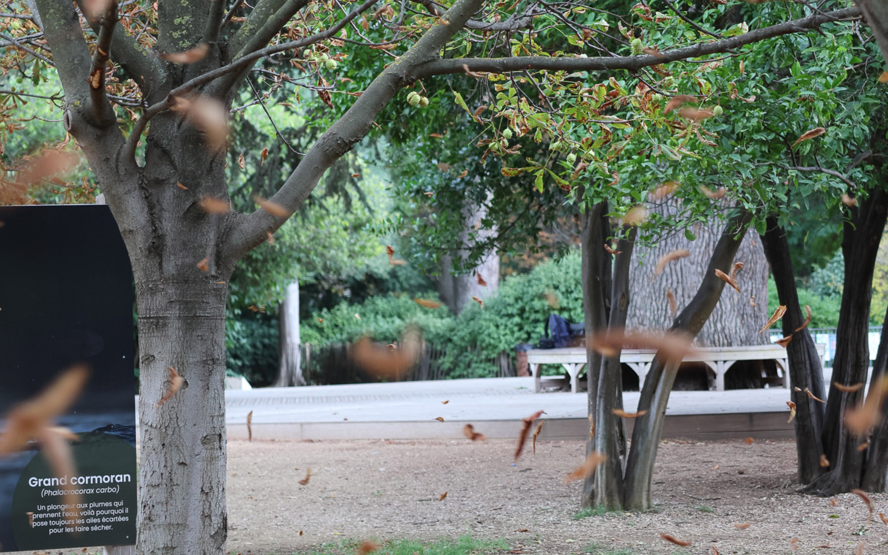
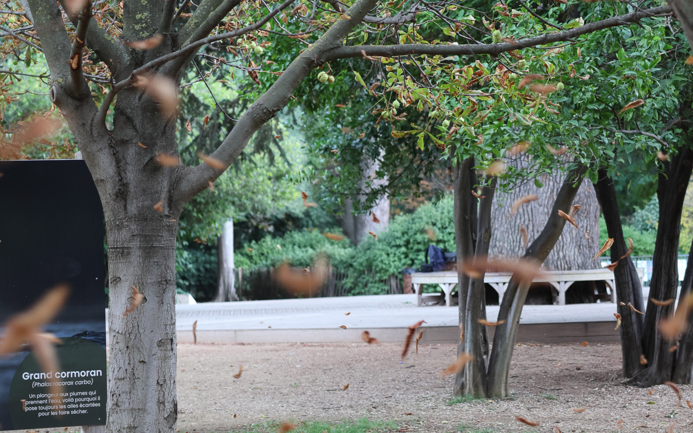

Situé en plein cœur de Toulon, le Museum du Jardin du Las est une véritable porte ouverte sur le patrimoine naturel et scientifique de la région. Niché dans une bastide du XIXe siècle, ce lieu emblématique invite à un voyage fascinant à travers le temps et l’espace, à la découverte de la biodiversité méditerranéenne et des merveilles géologiques du Var.
Le musée abrite une collection remarquable, alliant expositions permanentes et temporaires. Les visiteurs peuvent y explorer des thèmes variés : de la géologie aux espèces animales disparues, en passant par l'évolution du paysage méditerranéen au fil des millénaires. Chaque salle dévoile des trésors insoupçonnés, des fossiles témoignant d'un passé lointain aux squelettes imposants des animaux qui peuplaient autrefois nos terres.
Un lieu vivant et interactif. Contrairement aux musées traditionnels, le Museum du Jardin du Las privilégie une approche immersive. Grâce à des dispositifs numériques et sensoriels, les visiteurs peuvent observer les spécimens sous un nouvel angle, toucher certaines textures minérales et écouter les sons de la faune locale.


 


“Wow, mais c’est quoi cette espèce ?”
“C’est incroyable de voir ça en vrai !”
“Je ne savais pas que ces créatures avaient existé ici.”
“Ce musée est une véritable mine d’informations.”
“J’adore cette expérience immersive !”